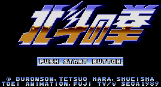

Hokuto no Ken - Genesis Games

- Genre: Platform/Fighting game
Controls
- A button: Punch
- B button: Kick
- C button: Jump
- Start: Pause
The US version of this Hokuto no Ken game was called Last Battle. The character names have been
radically altered in the US version. You must travel around looking for your kidnapped girlfriend and prevent the bad
guy from carrying out his evil plans. There are basically two different types of levels in this game. You start out in a
city with bad guys coming after you. After punching and kicking your way to the end of the city (usually be going all the
way to the right), you have completed that stage. A map appears letting you choose what city or place you want to go to
next. Depending on your choice, you either go to another city stage or you go to a one-on-one fighting stage. In this
stage, you must beat only one opponent in a typical Street Fighter match. Have not found any special moves
beyond the basic punch and kick.
Anime Video Game Resource Center © 1998 by Luis A. Cruz